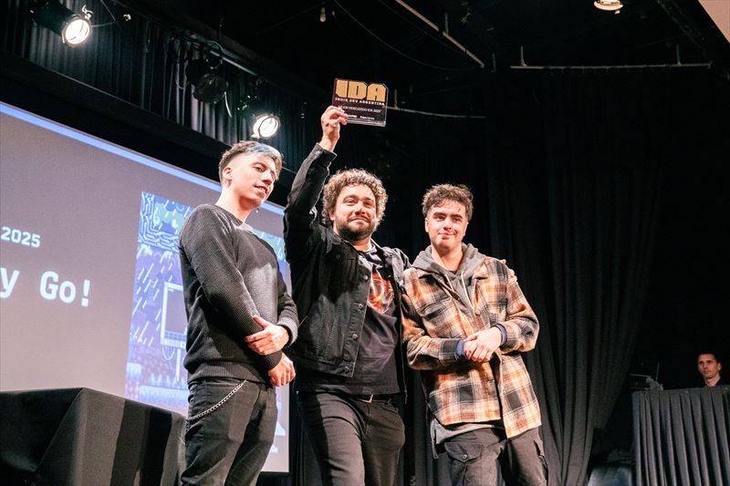

IDA / Premios
Premios IDA
Desde 2025, IDA premia a los juegos del showcase. Es un reconocimiento al trabajo de los equipos independientes y una vidriera más para sus proyectos.

Cómo funcionan
De la convocatoria al escenario
- Participan los juegos seleccionados para el showcase de cada edición.
- Las categorías y el jurado se anuncian antes del evento. Placeholder
- Los ganadores se anuncian en el cierre de IDA, sobre el escenario principal.
